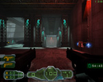
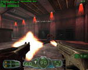
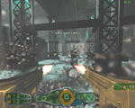
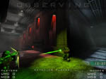
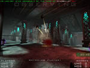
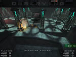

Click here to Download Gore Special Edition or Gore Ultimate Soldier.
To those who are new to Gore, it is completely free. Gore was developed by 4D Rulers and Published by Dreamcatcher Interactive in 2002 and was later released as a Free game this time titled Gore Special Edition.
This is a fan restoration of the Gore Special Edition page. The versions provided here include Openspy patch and working Server Browsers
You can also click here to view the servers on your browser.
To download the Gore installer, please go here.
Note: Gore Special Edition and Gore Ultimate Soldier are not compatible with each other. The most active version is Gore Special Edition, so if you're new or returning player download Gore Special Edition.
Note 2: If you get any CD Key errors in Gore Special Edition (either CD Key in use or other CD Key related errors) all you have to do is click on the Main Menu System Options, then click Enter a new Key. Enter any random key you want and it will work!
Note 3: Windows might give you a warning when you try to run the Gore Special Edition or Gore US installers. Press More Info, then Run Anyway as it is a false alarm.
From now until the new year you can receive a download link and free standard key for the Gore beta if you post in the giveaway thread in the 4D Rulers forums. If you are not a forum member, it is fast and free to join. Just remember to check your email for the forum activation link when you sign up.
Click Here to visit the thread.

The supply of free keys has been replenished and users should be able to start Gore again without getting the "Enter Key" screen.
Due to sudden unexpected technical difficulties at GameSpy we had been unable to get our supply refilled in time before running out of free keys.
.
.
The supply of keys for free users which are obtained by the game client when you first start playing Gore had ran out much faster than expected, causing new players to keep getting the "Enter Key" page when starting up Gore.
We hope to this problem fixed sometime later today.
.
.
The beta is now over and a public version of the installer is now available.
To those who are new to Gore, it is completely free, and has all the features of the original retail release known as "Gore Ultimate Soldier", and has all the features and content of the original retail release, plus new levels, weapons and much more.
Optionally, players can purchase a premium key and gain additonal bonus features to the game, which you can read more about here.
To the loyal beta players we thank them for their time, effort and patience with the process. Beta players will *not* need to download this installer. When you launch Gore it will update your beta copy to the installer version just as it did with all the beta updates.
The changelist for this version can be viewed here.
To download the Gore installer, please go here.
From now until the new year you can receive a download link and free standard key for the Gore beta if you post in the giveaway thread in the 4D Rulers forums. If you are not a forum member, it is fast and free to join. Just remember to check your email for the forum activation link when you sign up.
Click Here to visit the thread.
A new patch has been released.
You can view the list of changes here.
.
.
A new patch was released tonight!
You can view the list of changes here.
.
.

This is just a very small patch that was released for Gore tonight. It
You can view the list of changes here.
.
.
A new patch was issued for Gore. Many interface fixes and enhancements as usual. The most notable change in this patch is the addition of an on screen radar, which gives you a visual indication of the location of nearby teammates.
You can view the list of changes here.
.
.
Apologies for the lack of updates about the previous patches.
We have actually had 3 update patches since the last news updates. For players in beta, to view the changes you can view the change-list in your Gore\Docs folder so you don't have to wait for the site update to know what changed.
For everybody else you can view the changes here.
.
.
A new beta patch has been released for Gore!
To update to the newest version, start Gore and it will download and install the patch on its own. The patch fixes many of the various level bugs, as well as missing texture errors reported so far. GameSpy certifications were also added to the game.
You can view the list of changes here.
.
.
Gore beta testing has begun! Testing is now open for users who pre-purchase a premium key. This will allow players to connect to Gore servers as well as run their own test servers.
This period of testing will be for finding and fixing any obvious critical bugs that may exist in the game. At a later date once that class of bugs are taken care of we will announce further plans for testing and the eventual worldwide free release of Gore.
For more information check out the Order Premium Key button in the menu.
.
.
New screens released today showing game play from the upcoming free re-release of Gore - Ultimate Soldier. The screen shots show a sneak peak of the new map in the works by the name of "Metal Muse", during a play testing session of a three person Deathmatch game.
........
.........
Our hope is to have downloadable beta test of the re-release available for download to current Gore players as soon as it is ready for testing. Keep checking here for news and we'll let everyone know when new information surfaces.
.
.
We would like to list all the Gore related products we're offering for sale.
Autographed Gore - Ultimate Soldier
Own your own copy of Gore, autographed by myself and Matthew "Krijak" Weichel. Brand new and mint in box signed by us, especially to you with a personalized message.
49.99 + 4.95 shipping, total $54.94
Electronic Gore - Ultimate Soldier
No CD, No box, no jewel case, just a downloadable installer and a CD key. All you need to play the game and no shelf space, no shipping costs, no waiting. Just order it and download the link and get the cd key in your email!
$8.99
Name Tags In The Free Ad Supported Version of Gore
Want to see your name in Gore when you are fragging away? Want to be known in the Gore community forever, and immortalized in the game? Well then, this is your chance. We're going to release Gore for free pretty soon, with ads in it to earn us revenue, and while we're rebuilding it for this new release, you can send me your screen name or forum name, whatever you want for a small fee, and I'll put your name in the game somewhere, like we did for Patriots.
For 19.99 you can have a large graffiti tag, like we did in Brooklyn for all the developers. I am "Madmole" placed in the back alley of Brooklyn Brawl:
gore_tag.jpg
We will hold exclusive rights to place your name where we choose and in what level, and will design your name as we see fit graphically, so that it matches the games style and look, but we'll make sure it's not hard to find and gets some good visibility.
For 49.99 we'll post your avatar or picture somewhere in the game, like on a newspaper laying on the street or as a missing poster on the wall somewhere, etc. It will be our discretion where and how to use your avatar but we'll make sure it's visible and consider your request as to where you want it (like what level). All avatars must be original uncopyrighted pictures that are yours, and be approved by us.
To order your name tag, send me the money via paypal to: ordering@4drulers.com and give us your screen name that you would like us to use, and send a picture of your avatar if you want the 49.99 package.
To pay with a check, send to:
4D Rulers Software
PO Box 224
Beatrice, NE.
68310
Make sure to specify which product you want and your return address and email.
Thank you for your business and support!
Joel
----
To discuss these products, visit our forums.
|

{kind=link}